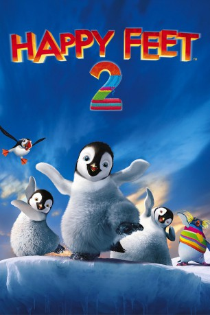

gesehen am 16.11.2016
gesehen am 16.11.2016 
 IMDB-Wertung: 5.9 / 10
IMDB-Wertung: 5.9 / 10  Metascore:
Metascore: 
Mumble, der begnadetste Stepptänzer unter den Pinguinen, macht sich Sorgen um seinen Sohn Eric: Dieser kann mit tänzerischen Choreografien so gar nichts anfangen. Als er wieder einmal vor dem Tanzdrang seines Vaters flüchtet, begegnet er dem Pinguin The Mighty Seven, der zu Erics Staunen fliegen kann. Damit kann Eric nicht mithalten, was ihn ganz missmutig stimmt. Doch sein Vater bringt ihm letztlich bei, dass es vor allem darauf ankommt, an sich selber zu glauben.
Jahr: 2011
Dauer: 99 Minuten
FSK: 0
Land: Australien Studio: Warner Bros.Tonspuren: DD5.1 - ,
Untertitel:
Auflösung: 1080p (1920x816) Größe: 7065 MB
Genre: Komödie, Animation/Trick, Familie, Musical
Regisseur: George Miller, Gary Eck, David Peers
Drehbuch: B.J. Nelson
Soundtrack:
Darsteller:
Datei: X:\Kinder Collections\Happy Feet\Happy Feet 2 (2011, FSK0, 1920x816) 3D.mkv seit 14.06.2016
Festplatte: Kinder-Filme+Trick
 Alle Filme aus Gruppe 'Kinder Collections\Happy Feet'
Alle Filme aus Gruppe 'Kinder Collections\Happy Feet'
(der aktuelle Film)